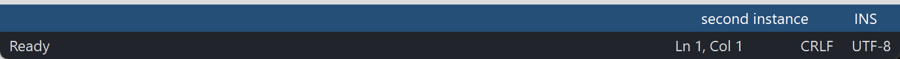

PsStatusBar
An owner-drawn status bar for FreeBASIC Win32 applications: a horizontal strip of panels along the bottom of a window, each holding a short piece of text, one of them able to stretch so the rest sit flush against the right edge.
It draws itself entirely — there is no system msctls_statusbar32 underneath, and nothing about its appearance depends on the visual style the user happens to be running. It has no child windows either: the control window is the bar, and a panel is a rectangle the control computed, not a window you can get a handle to.
The control owns the bar's background, the panel geometry, hover tracking and the tooltip. It does not own a single pixel inside a panel. Everything you see in a panel comes from your paint callback, so a control with no paint callback installed renders as a bare coloured strip.
What it looks like

Two independent status bars: a blue-themed one with right-aligned panels, and a dark one with Ready on the left and Ln/Col, CRLF and UTF-8 on the right. Panels auto-size to their text and one panel may spring to absorb the slack. Cropped to the bars — the demo's client area above them is empty filler, not part of the control.
Requirements
Files to copy into your project:
| File | Purpose |
|---|---|
PsStatusBar.bi | Declarations — types, callbacks, constants, function prototypes |
PsStatusBar.inc | Implementation |
PsBufferPaint.bi | The flicker-free drawing surface the control paints through |
PsBufferPaint.inc | Its implementation |
PsTipHost.bi / PsTipHost.inc | The tooltip backend switch — see Tooltips: two backends |
PsTooltip.bi / PsTooltip.inc | The owner-drawn tooltip. Required even if you never switch to it: PsTipHost.inc includes it. |
AfxNova is required. The control is built on CWindow, uses DWSTRING for panel text, and CBufferPaint draws through AfxNova\CGdiPlus.inc. Sources include AfxNova relative to the workspace root (#include once "AfxNova\CWindow.inc"), so builds need the workspace root on the include path:
fbc64.exe -i "C:\dev" main.basInclude order. PsStatusBar.bi pulls in PsBufferPaint.bi and PsTipHost.bi; PsStatusBar.inc pulls in PsTipHost.inc, which in turn pulls in PsTooltip.inc. So the four tooltip files need no include line of your own. The implementation of PsBufferPaint is the one thing not pulled in for you, so include it yourself, first, after the AfxNova headers and after using AfxNova:
#include once "windows.bi"
#include once "AfxNova\CWindow.inc"
#include once "AfxNova\AfxStr.inc"
#include once "AfxNova\AfxGdiplus.inc"
using AfxNova
#include once "PsBufferPaint.inc"
#include once "PsStatusBar.inc"GDI+ must be running before the first repaint and must outlive the last one. The control renders through PsBufferPaint, which draws geometry with GDI+, so bracket your message loop:
dim as ULONG_PTR gdipToken = AfxGdipInit()
' ... create windows, run the message loop ...
AfxGdipShutdown( gdipToken )AfxGdipShutdown must come after every window is destroyed, because each repaint builds and tears down a PsBufferPaint. If you also call CoInitialize / CoUninitialize, put the shutdown before CoUninitialize — GDI+ leans on COM.
Never name an identifier ok. GDI+ defines Ok = 0 as a Status enum value in namespace AfxNova, and hosts customarily say using AfxNova. An existing variable, parameter or function called ok becomes a duplicate definition the moment you adopt these files. Use bOK instead.
There is no pump obligation. The control installs no message filter and needs none — the header declares no filter function for you to call. It never takes focus and is not a tabstop, so IsDialogMessage is irrelevant to it. An ordinary GetMessage / TranslateMessage / DispatchMessage loop is all it asks for.
You supply and own the font. The control never creates one and never destroys one — it stores the HFONT you hand PsStatusBar_SetFont and selects it into a DC to measure with. Keep it alive for as long as the control lives, and delete it yourself afterwards. With no font set, the control measures with the stock DEFAULT_GUI_FONT, which it correctly never deletes.
Quick start
' Create it. The control is created zero-sized and hidden.
dim as HWND hBar = PsStatusBar_Create( hWndParent, IDC_MYFORM_STATUSBAR )
' Install the renderer FIRST -- nothing is drawn inside a panel without it.
PsStatusBar_SetPaintCallback( hBar, @MyStatusBar_Paint )
PsStatusBar_SetMessageCallback( hBar, @MyStatusBar_Message )
PsStatusBar_SetTooltipCallback( hBar, @MyStatusBar_Tooltip )
' The font is a LAYOUT input: it is what panel widths are measured with.
PsStatusBar_SetBackColor( hBar, BGR(33,37,43) )
PsStatusBar_SetFont( hBar, ghFont )
' A representative bar: a message on the left, readouts on the right,
' and an empty spring panel between them doing the pushing.
PsStatusBar_AddPanel( hBar, "Ready", 1001 )
PsStatusBar_AddPanel( hBar, "", 1002 ) ' the spring
PsStatusBar_AddPanel( hBar, "Ln 1, Col 1", 1003 )
PsStatusBar_AddPanel( hBar, "CRLF", 1004 )
PsStatusBar_AddPanel( hBar, "UTF-8", 1005 )
PsStatusBar_SetExpandPanel( hBar, 1 ) ' panel 1 eats the slack
PsStatusBar_SetPanelMinWidth( hBar, 2, pWindow->ScaleX(110) ) ' stop the readout jittering
ShowWindow( hBar, SW_SHOW )Place it yourself, from the host's WM_SIZE. The control has no opinion about where it goes:
sub MyForm_PositionStatusBar( byval hwnd as HWND )
dim as RECT rc: GetClientRect( hwnd, @rc )
dim as long nHeight = 24
dim pWindow as CWindow ptr = AfxCWindowPtr(hwnd)
if pWindow then nHeight = pWindow->ScaleY(24)
SetWindowPos( hBar, 0, _
rc.left, rc.bottom - nHeight, rc.right - rc.left, nHeight, SWP_NOZORDER )
end subAnd the renderer, which draws one panel per call:
sub MyStatusBar_Paint( byval p as PSSTATUSBAR_PAINTINFO ptr )
dim as COLORREF backclr, foreclr
if p->isHot then ' the only panel state there is: hot > normal
backclr = theme.BackColorHot : foreclr = theme.ForeColorHot
else
backclr = theme.BackColor : foreclr = theme.ForeColor
end if
p->b->SetForeColor( foreclr )
p->b->SetBackColor( backclr )
p->b->PaintRect( @p->rc )
' Inset by the control's own padding, not a hardcoded guess: that padding is what
' the panel's width was measured with. Same for the font.
dim as RECT rcText = p->rc
rcText.left += PsStatusBar_GetPadding( p->hStatusBar )
p->b->SetFont( ghFont )
p->b->PaintText( p->wszCaption, @rcText, DT_LEFT )
end subLater, from anywhere:
PsStatusBar_SetText( hBar, 2, "Ln 42, Col 7" ) ' re-measures and repaintsThat is the whole minimum. Everything below is refinement.
Concepts
The handle is a real HWND
PsStatusBar_Create returns an ordinary window handle, and every PsStatusBar_* function takes it. It is not an opaque type, so you can treat the control as the window it is — SetWindowPos to place and size it, ShowWindow to show it, GetDlgItem to find it by the CtrlID you passed at creation.
It is created zero-sized and hidden
PsStatusBar_Create gives the control the styles WS_CHILD, WS_CLIPSIBLINGS and WS_CLIPCHILDREN. WS_VISIBLE is deliberately absent, so a newly created control shows nothing until you size it and call ShowWindow. That lets you build and configure the whole bar before it is ever seen. CS_DBLCLKS is added to the window class after creation, so WM_LBUTTONDBLCLK is delivered.
A panel is a rectangle, not a window
Panels live in an internal array. They are identified by their model index, 0 to PsStatusBar_GetCount() - 1, and every function that names a panel takes that index. Panels can be added, inserted and deleted at any time, and the whole set can be cleared — this control is not static.
Each panel carries three pieces of host-visible state: its Text, an itemData integer of your choosing (a command id, typically, since a click hands you back the index and you look the id up), and nMinWidth. Its rect is derived by the control and is read-only to you.
Indices move. Insert or delete a panel and every later panel's index shifts, so an index you stashed earlier can now name a different panel. The control keeps its own stored indices straight for you — see the spring rules below — but yours are your problem.
How wide a panel is
This is the core of the control. Every panel is measured, and the formula is:
panelWidth(i) = max( textWidth(i) + 2*padding, nMinWidth(i) )textWidth is GetTextExtentPoint32W of the panel's text, measured with the font you set (or the stock GUI font if you set none). padding is one value for the whole bar, charged on both sides. nMinWidth is per panel and defaults to 0, so panels auto-size to their text.
nMinWidth is a floor, not a fixed width. A panel whose text is wider than its minimum grows past it; a panel is never drawn narrower than its own text.
Then the spring absorbs the slack:
totalW = sum of every panelWidth(i)
leftover = clientWidth - totalW
if leftover > 0 and a valid spring panel is set:
panelWidth(spring) += leftoverAnd the panels are laid left to right, each spanning the full client height:
x = 0
for each panel i:
rc(i) = ( x, clientTop, x + panelWidth(i), clientBottom )
x += panelWidth(i)Worked example
An 800-pixel-wide bar, padding 8, with the five panels from the quick start. Text widths are whatever the font measures — the numbers below are illustrative:
| i | Text | text | +2×8 | nMinWidth | width |
|---|---|---|---|---|---|
| 0 | Ready | 40 | 56 | 0 | 56 |
| 1 | (empty — the spring) | 0 | 16 | 0 | 16 |
| 2 | Ln 1, Col 1 | 70 | 86 | 110 | 110 |
| 3 | CRLF | 32 | 48 | 0 | 48 |
| 4 | UTF-8 | 38 | 54 | 0 | 54 |
| total 284 |
leftover = 800 − 284 = 516, so panel 1 becomes 16 + 516 = 532, and the rects come out:
0: 0 .. 56 "Ready"
1: 56 .. 588 the spring, empty
2: 588 .. 698 "Ln 1, Col 1"
3: 698 .. 746 "CRLF"
4: 746 .. 800 "UTF-8"Panels 2, 3 and 4 are flush against the right edge, and stay there through every resize, because the spring is what changes size. That is the entire alignment story — there is no right-align flag, no per-panel alignment API. You get a trailing right-aligned group by putting the spring in front of it.
On overflow, nothing shrinks
When leftover <= 0 the spring does not grow — it is already at its natural width — and no panel is squeezed. The panels simply run past the right edge and the ones on the right are clipped. Rects are computed honestly rather than compressed, which keeps hit-testing correct for free: the cursor cannot reach past the edge anyway.
Panels are measured, so the font re-lays-out
Layout takes a device context. PsStatusBar_SetFont therefore does more than repaint — it invalidates the layout and every panel is re-measured on the next paint. So does PsStatusBar_SetPadding, and so does every change to a panel's text.
Two obligations follow for your paint callback, and breaking either makes the widths lie:
- Draw with the same font you handed
PsStatusBar_SetFont. The widths were measured with it. - Inset your text by
PsStatusBar_GetPadding(). That padding was added to the measured text width, so it is exactly the space the width already accounts for. This is whyPSSTATUSBAR_PAINTINFOcarrieshStatusBar— so the callback can ask.
Layout is lazy
Mutators mark the layout stale and request a repaint; the next paint — or a PsStatusBar_GetPanelRect query — performs one measuring pass. There is no begin-update / end-update pair to remember, and a burst of PsStatusBar_SetText calls costs one layout, not N.
A layout attempted while the control has no client area yet (created zero-sized, or not sized by the host), or one that cannot obtain a DC, leaves the layout marked stale and retries on the next paint.
The spring is one panel, and the control keeps its index honest
PsStatusBar_SetExpandPanel nominates the single spring. Setting one clears any previous one; -1 clears it entirely; an index that is neither valid nor -1 is refused and the current spring is left alone.
Because the spring is stored as an index, the control fixes it up when panels move:
| You do | The stored spring index |
|---|---|
| Insert at or before the spring | Shifts up by one, so it still names the same panel |
| Insert after the spring | Unchanged |
| Delete the spring itself | Cleared to -1 — there is no spring any more |
| Delete a panel before the spring | Shifts down by one |
PsStatusBar_Clear | Cleared to -1 |
Hover, and the safety net behind it
One panel at a time is hot — the one under the cursor. It is passed to your paint callback as isHot, and it is the only per-panel visual state the control tracks. There is no selection and no pressed state.
WM_MOUSEMOVE recomputes the hot panel and invalidates only the two panels whose state changed, not the whole bar. WM_MOUSELEAVE clears it. Because WM_MOUSELEAVE is not reliably delivered when the cursor exits quickly or onto another control — which would strand a panel painted hot — a 100 ms timer runs while the cursor is over the control and polls the cursor position as a fallback. The timer is killed on WM_DESTROY, so it cannot outlive the window.
Tooltips
The control creates one tooltip window covering the whole bar — not one tool per panel, because panels are painted rects rather than windows. The tip text is pulled on demand (LPSTR_TEXTCALLBACK / TTN_GETDISPINFOW) for whichever panel is currently hot, so nothing is duplicated and nothing goes stale. Moving between panels pops the current tip so the next hover re-queries.
With no tooltip callback installed, the tip shows the hot panel's own Text. Install one to supply something different, and return "" to suppress the tip for that panel entirely.
The control owns that tooltip window and destroys it in WM_NCDESTROY. PsStatusBar_GetTooltipHandle hands you the HWND if you want to send it TTM_* messages.
There are two tooltip backends — the comctl32 one described above, which is the default, and the owner-drawn PsTooltip. PsStatusBar_SetTooltipMode chooses per instance. The choice changes how a tip is drawn and driven, never what it says: both backends resolve the text through the rule in the paragraphs above. See Tooltips: two backends under the API reference.
Pixels, and who scales them
Only the creation-time padding default is DPI-scaled for you: PSSTATUSBAR_DEFAULT_PADDING (8) is passed through CWindow::ScaleX at create. PsStatusBar_SetPadding and PsStatusBar_SetPanelMinWidth take raw pixels afterwards and expect you to scale — typically pWindow->ScaleX(...). The control's height is entirely yours: it spans whatever you give it, and every panel spans the full client height.
Instances share nothing
Every scrap of state — panels, spring, padding, font, colours, callbacks, hot index, tooltip — lives in a per-instance structure hung off the control window. Two bars on the same form can have different callbacks, different padding and independent hover state, and hovering one never lights up the other.
Lifetime
The control frees itself when its window is destroyed, and destroys its own tooltip window with it. Fonts you pass in stay yours. Destroy the parent and the only thing left to clean up is your HFONT.
Behaviour and limits
Firm properties of the control, not settings:
- Nothing renders inside a panel without a paint callback. The control paints its own background and stops. That is not a degraded mode with a fallback — there is no built-in panel painter to fall back to.
- No mouse capture is taken, ever. Capture's only product is a guaranteed
WM_LBUTTONDOWN→WM_LBUTTONUPpairing, and nothing here consumes that: there is no press state to strand. Two consequences follow by design. AWM_LBUTTONDOWNis not guaranteed a matchingWM_LBUTTONUP— press inside, release outside, and no up arrives, which is exactly right for a host that acts onWM_LBUTTONUPwithidx >= 0. And pressing on panel 3, dragging to panel 5 and releasing fires panel 5. If you need true button semantics, put a button there. CS_DBLCLKSis on.WM_LBUTTONDBLCLKis delivered to your message callback. The control does nothing with it itself.- The control never takes focus. There is no
SetFocusanywhere in it, including onWM_LBUTTONDOWN— a status bar must not steal focus from the host's editor. It is not a tabstop and has no keyboard handling of any kind. - No panel width setter. You give a panel text and optionally a minimum width; the control measures and positions. A panel narrower than its own text is not something this control will draw.
- No vertical layout. Every panel spans the full client height. There is no row concept, no vertical padding, no per-panel height.
- No panel alignment API. Your callback owns every pixel inside a panel, so alignment is a
DT_*flag in your ownPaintTextcall. Bar-level alignment is the spring. - Only one spring. Setting a second one clears the first.
- No separators or sizing grip. Draw them yourself in the paint callback if you want them.
- No
WM_COMMANDto the parent. A click reaches you through the message callback and nowhere else. - The right mouse button is reported, never acted on.
WM_RBUTTONDOWNreaches the message callback; a context menu is your business.WM_RBUTTONUPis not reported. PsStatusBar_SetBackColordoes not repaint. It stores the colour and returns the previous one. Follow it withPsStatusBar_Refreshif the control is already visible.PsStatusBar_GetItemRectdoes not force a pending layout;PsStatusBar_GetPanelRectdoes. The two otherwise return the same rectangle. PreferGetPanelRectunless you specifically want the last computed value.PsStatusBar_SetHoverTimedoes double duty. It is both the tooltip's initial delay (TTDT_INITIAL, honoured by either backend) andTrackMouseEvent'sdwHoverTime, which is what schedules theWM_MOUSEHOVERhanded to your message callback. One value drives both; you cannot set them apart. Its parameter is declaredas integerwherePsStatusBar_SetAutoPopTimeandPsStatusBar_SetReshowTimetakeas long.- On overflow nothing shrinks — panels run past the right edge and are clipped.
A paint callback that fills a rectangle covering the whole control will erase everything under it, including every panel already drawn. Fill
p->rc, the panel rect you were handed — never the client rect. The control has already filled the background before the first panel callback runs.
API reference
Creation
| Function | Description |
|---|---|
PsStatusBar_Create( hWndParent, CtrlID ) as HWND | Creates the control as a child of hWndParent and returns its window handle. CtrlID becomes the window's GWLP_ID, so GetDlgItem finds it. Created zero-sized and hidden — place it with SetWindowPos, then ShowWindow. Also creates the control's tooltip window. |
Panels
| Function | Description |
|---|---|
PsStatusBar_AddPanel( hStatusBar, Text, itemData = 0 ) as integer | Appends a panel and returns its model index, or -1 on failure. Marks the layout stale and repaints. |
PsStatusBar_InsertPanel( hStatusBar, idx, Text, itemData = 0 ) as integer | Inserts a panel at idx, shifting that panel and every later one to a higher index. idx is clamped to [0, count], so an out-of-range value inserts at the near end rather than failing. Returns the index actually used, or -1 on failure. If the spring is at or after idx, its stored index is shifted up so it still names the same panel. |
PsStatusBar_DeletePanel( hStatusBar, idx ) as boolean | Deletes the panel at idx and shifts later panels down. Returns FALSE for an invalid index. Deleting the spring clears the spring; deleting a panel before it shifts it down. A hot index left past the end is cleared. |
PsStatusBar_Clear( hStatusBar ) | Removes every panel, and clears both the spring and the hot panel. Marks the layout stale and repaints. |
PsStatusBar_GetCount( hStatusBar ) as integer | Number of panels. Valid indices are 0 to count - 1. |
Panel state
| Function | Description |
|---|---|
PsStatusBar_GetText( hStatusBar, idx ) as DWSTRING | The panel's text; "" for an invalid index. |
PsStatusBar_SetText( hStatusBar, idx, Text ) as boolean | Sets the text. Because text drives the panel's width this re-lays-out, not merely repaints. Returns FALSE for an invalid index. |
PsStatusBar_GetItemData( hStatusBar, idx ) as integer | The panel's itemData; 0 for an invalid index — indistinguishable from a panel whose data really is 0. |
PsStatusBar_SetItemData( hStatusBar, idx, itemData ) as boolean | Sets the itemData. Affects neither layout nor appearance, so it does not repaint. Returns FALSE for an invalid index. |
Geometry & layout
All pixel values are raw; you do the DPI scaling.
| Function | Description |
|---|---|
PsStatusBar_GetPanelMinWidth( hStatusBar, idx ) as integer | The panel's minimum width in pixels; 0 means auto-size to text. Returns 0 for an invalid index. |
PsStatusBar_SetPanelMinWidth( hStatusBar, idx, nMinWidth ) as boolean | Sets the floor, clamped to a minimum of 0. A floor, not a fixed width — the panel still grows past it for longer text. Set one on any panel whose text changes length, or it resizes and shoves its neighbours on every update. Re-lays-out. Returns FALSE for an invalid index. |
PsStatusBar_GetExpandPanel( hStatusBar ) as integer | The spring panel's index, or -1 if there is none. |
PsStatusBar_SetExpandPanel( hStatusBar, idx ) as boolean | Nominates the single spring panel that absorbs all unused bar width. Setting one clears any previous spring; -1 clears it entirely. Returns FALSE — leaving the current spring untouched — for an index that is neither valid nor -1. Re-lays-out. |
PsStatusBar_GetPadding( hStatusBar ) as integer | The horizontal padding added to each side of a panel's text when measuring. Call this from your paint callback to inset text by the same amount the width assumed. |
PsStatusBar_SetPadding( hStatusBar, nPadding ) | Sets that padding, clamped to a minimum of 0. One value for the whole bar. This is a layout input, not cosmetics — it re-lays-out. Raw pixels: DPI-scale it yourself. |
PsStatusBar_GetPanelRect( hStatusBar, idx, byref rc ) as boolean | The panel's rectangle in client coordinates. Forces a pending layout first, so the result is always current. Returns FALSE and leaves rc empty for an invalid index. |
PsStatusBar_GetItemRect( hStatusBar, idx ) as RECT | The panel's last computed rectangle, returned by value. Does not force a pending layout, so it can be stale after a mutator and before the next paint. Returns an empty RECT for an invalid index. |
PsStatusBar_Refresh( hStatusBar ) | Marks the layout stale and invalidates the whole control with background erase, so a region vacated by a shrinking panel is cleared. Every mutator does this for you; call it after PsStatusBar_SetBackColor, which does not. |
Appearance
| Function | Description |
|---|---|
PsStatusBar_GetBackColor( hStatusBar ) as COLORREF | The bar's background colour. |
PsStatusBar_SetBackColor( hStatusBar, clr ) as COLORREF | Sets it and returns the previous colour. Does not repaint — follow with PsStatusBar_Refresh on a visible control. |
PsStatusBar_GetFont( hStatusBar ) as HFONT | The font handle you set, or 0 if none. |
PsStatusBar_SetFont( hStatusBar, hFont ) as boolean | Stores the font used to measure panel widths. The control borrows the handle and never destroys it — keep it alive, delete it yourself. With none set, measurement uses the stock DEFAULT_GUI_FONT. Because the font is what widths are measured with, this re-lays-out. Returns FALSE only when the handle is not a PsStatusBar. |
Tooltips
| Function | Description |
|---|---|
PsStatusBar_GetTooltipHandle( hStatusBar ) as HWND | The comctl32 tooltip window, for any TTM_* message you want to send it yourself, such as TTM_SETMAXTIPWIDTH. The control owns it and destroys it — do not destroy it yourself. Returns 0 while this control is on the PsTooltip backend — the honest answer, since a TTM_* sent to a PsTooltip window is silently ignored. |
PsStatusBar_GetPsTooltipHandle( hStatusBar ) as HWND | The PsTooltip window, or 0 while on the system backend. The door to PsTooltip_SetColors / SetFonts / SetStyle / SetMaxWidth / SetTitle / SetGlyph — none of which is mirrored here. |
PsStatusBar_SetTooltipMode( hStatusBar, nMode ) as boolean | PSTIP_MODE_SYSTEM (default) or PSTIP_MODE_PS. Destroys the outgoing tip, builds the incoming one and re-applies the stored delays. A no-op when the mode asked for is already live. Returns TRUE if that mode is live on return. See below. |
PsStatusBar_GetTooltipMode( hStatusBar ) as long | Which backend is live. |
PsStatusBar_SetHoverTime( hStatusBar, milliseconds ) | The initial delay (TTDT_INITIAL) — how long the cursor must rest before a tip shows. Honoured by both backends. It is also TrackMouseEvent's dwHoverTime, so it sets the WM_MOUSEHOVER delay handed to your message callback (default 250 ms) at the same time; that half takes effect on the next WM_MOUSEMOVE. Its parameter is as integer, unlike the two below. |
PsStatusBar_SetAutoPopTime( hStatusBar, milliseconds as long ) | How long a tip stays up (TTDT_AUTOPOP). Honoured by both backends. |
PsStatusBar_SetReshowTime( hStatusBar, milliseconds as long ) | The shorter delay used when a tip was recently dismissed (TTDT_RESHOW). Honoured by both backends. |
Tooltips: two backends
The control ships on the system (comctl32) tooltip it has always used. PSTIP_MODE_PS switches this instance to PsTooltip: owner-drawn, themeable, word-wrapping without a hand-sent TTM_SETMAXTIPWIDTH, and — the one that matters structurally — not a subclass of the control it serves, so it still works when the window under the cursor is a descendant rather than the control itself. Either way the control adds no pump obligation: PsTooltip has no FilterMessage.
The default is deliberate, not caution. PsTooltip's colour defaults are dark, so a control that switched itself would put a dark tip on a light form. Theme every tip in the process at once — PsTooltip_SetDefaultColors, PsTooltip_SetDefaultFonts, PsTooltip_SetDefaultStyle, PsTooltip_SetDefaultMaxWidth, PsTooltip_SetDefaultDelays, called once at startup — then opt in per instance.
The mode changes how a tip is drawn, never what it says. Both backends resolve text through the same rule — this control's TooltipCallback if one is installed, otherwise the panel's own Text.
A delay you set is stored as well as pushed, so one set before a mode switch is still in force after it. A delay you never set keeps the backend's own derivation from the system double-click time, which is what makes a tip appear on the same beat as every other tip on the machine.
PsTooltip_SetDefaultColors( @myTipColors ) ' once, at startup, for every tip in the process
PsTooltip_SetDefaultFonts( ghFontUI )
PsStatusBar_SetTooltipMode( hBar, PSTIP_MODE_PS )
PsStatusBar_SetHoverTime( hBar, 400 )
dim as HWND hTip = PsStatusBar_GetPsTooltipHandle( hBar )
if hTip then PsTooltip_SetTitle( hTip, "Cursor position" ) ' not reachable on the system backendCallback registration
| Function | Description |
|---|---|
PsStatusBar_SetPaintCallback( hStatusBar, usersub ) | Installs the renderer called once per visible panel. Required — nothing inside a panel is drawn without it. Does not itself repaint; call PsStatusBar_Refresh if the control is already visible. |
PsStatusBar_SetMessageCallback( hStatusBar, userfunc ) | Installs an observer for mouse messages. |
PsStatusBar_SetTooltipCallback( hStatusBar, userfunc ) | Installs the on-demand tooltip text supplier. Without it, the tip shows the panel's own text. |
All three are optional and independent — though the bar shows nothing but its background without the first.
Colors
There is no colour struct. The control paints exactly one thing — its own background — and so it has exactly one colour, reached through PsStatusBar_GetBackColor / PsStatusBar_SetBackColor. Everything else on screen is drawn by your paint callback out of colours you keep yourself, which is why panel colours are not part of this API.
| Colour | Paints |
|---|---|
BackColor | The whole client area, filled once at the start of every repaint — including any gap on the right that no panel covers |
BackColor has no default worth relying on: an unset one is 0, which is black. Set it before the control is first shown.
The one state the control tracks
Panel visual state is isHot and nothing else. There is no selection, no pressed state and no disabled state, so the precedence your callback implements is the whole table:
hot > normalAt most one panel is hot at a time. When the cursor is over bar area no panel covers, no panel is hot.
The paint sequence
| Step | What happens |
|---|---|
| 1 | Any pending layout is consumed — one measuring pass, however many mutators ran |
| 2 | The update rectangle is captured (before BeginPaint clears it) |
| 3 | A PsBufferPaint is created and the whole client is filled with BackColor |
| 4 | Your paint callback is invoked once per panel that intersects the update rectangle |
| 5 | The buffer is blitted to the screen |
Step 4's skip is an optimisation only, and correctness never depends on it: the update rectangle is the update region's bounding box, so when hover moves between two far-apart panels their union spans the bar and nothing is skipped. The buffer fills the whole client either way. WM_ERASEBKGND returns TRUE and never erases — step 3 is the erase.
Callbacks
Paint
type SB_PaintCallbackSub as sub( byval p as PSSTATUSBAR_PAINTINFO ptr )Draws one panel. Called once for each panel touched by the repaint, so keep it cheap. Paint through p->b, the control's double buffer for this repaint — do not touch the screen DC, and do not keep the pointer past the call.
Nothing at all is drawn inside panels if no paint callback is set.
PSSTATUSBAR_PAINTINFO:
| Field | Meaning |
|---|---|
hStatusBar | The control, so the callback can query it — chiefly for PsStatusBar_GetPadding |
itemID | The panel's model index |
b | The control's PsBufferPaint for this repaint (borrowed, not owned) |
rc | This panel's rect, in client coordinates — the only rect you may fill |
isHot | The mouse is over this panel |
wszCaption | The panel's Text, copied for you so you need not call GetText |
Two contracts, and breaking either makes the layout disagree with what you drew:
- Draw with the same font you handed
PsStatusBar_SetFont. The widths were measured with it. - Inset your text by
PsStatusBar_GetPadding( p->hStatusBar ). That padding is already part of the width.
Fill
p->rc, never the client rect. A callback that fills a rectangle covering the whole control erases every panel drawn before it.
Message
type SB_MessageCallbackFunc as function( byval m as PSSTATUSBAR_MESSAGEINFO ptr ) as booleanObserves mouse messages as they arrive. Return TRUE to suppress the control's own handling of that message, FALSE to let it proceed.
The result is honoured uniformly, for every message. The control takes no mouse capture, so there is no invariant a callback can strand by suppressing something — unlike controls that must see their own button-up.
The callback is offered exactly these messages:
| Message | Notes |
|---|---|
WM_MOUSEMOVE | Called after the hot panel is updated, so m->idx and the control agree |
WM_MOUSEHOVER | Scheduled by PsStatusBar_SetHoverTime, default 250 ms |
WM_MOUSELEAVE | m->idx is always -1 — the mouse is gone. Hot tracking is already cleared |
WM_LBUTTONDOWN | |
WM_LBUTTONUP | Only ever arrives while the cursor is still over the control; see the capture note |
WM_LBUTTONDBLCLK | Delivered because the class carries CS_DBLCLKS |
WM_RBUTTONDOWN | Reported, never acted on. WM_RBUTTONUP is not reported |
PSSTATUSBAR_MESSAGEINFO:
| Field | Meaning |
|---|---|
hStatusBar | The control — use it to tell instances apart when they share one callback |
uMsg | The message |
wParam | Its wParam |
lParam | Its lParam |
idx | Panel index under the mouse, or -1 for none (empty bar area, or the mouse has left) |
A click handler is normally WM_LBUTTONUP with idx <> -1:
function MyStatusBar_Message( byval m as PSSTATUSBAR_MESSAGEINFO ptr ) as boolean
if m->uMsg = WM_LBUTTONUP then
if m->idx <> -1 then
DoCommand( PsStatusBar_GetItemData( m->hStatusBar, m->idx ) )
end if
end if
return false ' let the control carry on
end functionTooltip
type SB_TooltipCallbackFunc as function( byval hStatusBar as HWND, byval idx as integer ) as DWSTRINGSupplies the tooltip text for a panel, on demand — called only when a tip is about to show, for whichever panel is currently hot. Return "" for no tooltip on that panel, which is how you suppress the tip over an empty spring.
If no tooltip callback is installed, the tip shows the panel's own Text.
function MyStatusBar_Tooltip( byval hCtl as HWND, byval idx as integer ) as DWSTRING
dim as DWSTRING wszText = PsStatusBar_GetText( hCtl, idx )
if len(wszText) = 0 then return "" ' the spring gets no tip
return "Panel " & idx & " -> " & wszText
end functionConstants
| Constant | Value | Meaning |
|---|---|---|
PSSTATUSBAR_DEFAULT_PADDING | 8 | Default horizontal padding per side, DPI-scaled at create. PsStatusBar_SetPadding takes raw pixels thereafter |
IDT_CSTATUSBAR_HOTTRACK | &hCB01 | Timer id for the hover safety net. Per-window, so every instance can share it — but do not reuse this id on the control's own window |
PSSTATUSBAR_HOTTRACK_MS | 100 | How often that timer polls the cursor while it is over the control |
PSTIP_MODE_SYSTEM | 0 | The comctl32 tooltip backend — the default |
PSTIP_MODE_PS | 1 | The owner-drawn PsTooltip backend |
Two more defaults are not #defines but structure-field initialisers worth knowing:
| Default | Value |
|---|---|
Hover time, changeable with PsStatusBar_SetHoverTime | 250 ms |
| Spring panel index — no spring | −1 |
Running the demo
The demo loads Segoe Fluent Icons at startup via AddFontResourceEx, and aborts if the font is absent — the control family draws its glyphs from it.
The font ships with Windows 11 but is Microsoft's, not ours, so it is not redistributed here. Copy it in once before building:
copy C:\Windows\Fonts\SegoeIcons.ttf SegoeFluentIcons.ttfNote the rename: Windows stores the file as SegoeIcons.ttf, while the family name is "Segoe Fluent Icons". On Windows 10 the font is not present at all.
Licence
Mozilla Public License 2.0.
MPL-2.0 is file-level copyleft, chosen deliberately for a drop-in control:
- You may use this in closed-source software, commercial or otherwise. §3.2 permits static linking with no additional conditions.
- If you modify these files, publish those files' changes. The obligation is per-file — your own sources are unaffected however tightly they are combined with these.
- The Exhibit B "Incompatible With Secondary Licenses" notice is not applied, which keeps this GPL-compatible.